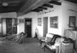
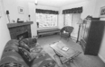
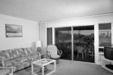
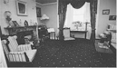
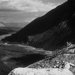

Scene Recognition with Bag of Words
| Class | Instructor | Date | Language | Ta'ed | Code |
|---|---|---|---|---|---|
| CS 6476 Computer Vision | James Hays | Fall 2015 | MATLAB | No | Code N/A |

Best Performing Tiny Image confusion matrix
The purpose of this project was to implement various image parameterization and classification techniques to assist in the task of scene recognition. From 15 categories of images we build training and testing sets of images to build and validate, respectively, the various classifiers we are implementing.
- Tiny Image representation + K-NN Classification
- Bag of SIFT Words + K-NN Classification
- Bag of SIFT Words + Linear SVM Classification
- Bag of SIFT Words + Non-Linear SVM Classification
- Bag of PHOW Words + K-NN/Linear/Non-Linear SVM Classification
Tiny Image representation + K-NN Classification
In an ideal world, we would train and validate our classifiers on entire images, but this would be intractible to teach any kind of thorough image recognition, due to the sheer size of the data required. To counter this, image representation mechanisms are implemented to represent the important contextual elements of an image in a reduced space to make classification tasks tractible.
One of the simplest of such mechanisms is the tiny image reperesentation. Basically, the image is shrunk to a size that is sufficiently small that it can be used itself as a feature descriptor of the original image. It is quickly apparent that this is not a desireable solution, as all the detail and high-frequency content in the image is lost - in effect, the process of shrinking the image is equivalent to blurring it.
Equally as straight-forward is the concept behind the first classifier that I implemented - K-NN. Basically it says that the a sample is going to probably be classified similarly to its neighbors in feature space (those samples whose features it generally "looks like"). For this calculation I implemented both a hard threshold and a weighted voting mechanism, where the first K neighbors had an influence on the predicted classification of a particular sample that was inversely proportional to their distance. This was intended to minimaize the impact of outliers, who may be very close to a sample but whose classes are sparsely represented in the neighborhood. This resulted in a few percentage points better performance, on average, everywhere I used K-NN.
For the Tiny Image portion of the project, I shrank the images to be 16x16 pixels. I alternated between shrinking only the center square of the image and shrinking the entire image, and using the central square improved the performance by a few %, with the tiny images also being normalized. Compared to random guessing, which would be expected to be correct around 6-7% of the time (1:15), the tiny images did pretty well at ~22-23%, but for a real recognition task this performance is severely lacking.
%The best performance for the tiny image representation using K-NN classifier was :
Avg accuracy : 0.233667 across 10.000000 runs with std 0.005915
Best accuracy : 0.246 with K = 6;
using varying K's : [14, 5, 1, 1, 17, 7, 1, 1, 6, 1]
Bag of SIFT Words + K-NN Classification
Instead of Tiny Images, I next used a Bag of Words implementation derived from SIFT descriptors of the training images. To accomplish this, I used vl_dsift to aquire the various sift descriptors from each image, then I compiled a descriptor "Language" by assigning each descriptor to a cluster using vlfeat's nearest neighbor algorithm, and saving the centroid of this cluster as a feature. I varied vocabulary (# of clusters) from 10 to 800 and step size from 100 to 8, but ended up using a vocabulary size of 400, a step size of 8 and a sample size of 4 as my primary BOW sources. I varied vlfeat's Nearest Neighbor algorithm between the default lloyd and elkan and ANN, and found that ANN performed as well as elkan and lloyd (on average) and was a bit faster. In general the clustering of the vocabulary for the Bag Of Words generation took the longest of all the components for this project to complete, but this was alleviated somewhat by saving files with names relevant to the hyperparams used to generate them.
I then build normalized histograms of each image in the test and training data set, counting the presence of each of the words in the sift feature complement for each image. The performance of this method was over twice as good as the best Tiny Image performance, which stands to reason in that the details of the images are not lost as they are with blurring/shrinking, but rather encoded, albeit without and sense of their location within the image.
%The best performance for the Bag of SIFT words representation using K-NN classifier was :
Without neighbor voting : Avg accuracy : 0.534133 across 10.000000 runs with std 0.010134
Best accuracy with K val : 15.000000 gives accuracy : 0.543333
With Neighbor Voting : Avg accuracy : 0.551400 across 10.000000 runs with std 0.012914
Best K val : 5.000000 gives accuracy : 0.579333
Bag of SIFT Words + Linear SVM Classification
I then replaced the K-NN classifier with a linear SVM classifier, which attempts to partition the feature space into "membership/non-membership" zones using a n-dimensional hyperplane, where n is the dimension of feature space. To implement this I used vlfeat's vl_svmtrain function. I found that a lambda of 0.000240 worked best with my bag of sift words representation, and this classifier added over 10% to the performance of this configuration.
%The best performance for the Bag of SIFT words representation using Linear SVM classifier was :
Avg accuracy : 0.662267 across 10.000000 runs with std 0.004436
Best Accuracy (mean of diagonal of confusion matrix) is 0.684
Bag of SIFT Words + Non-Linear SVM Classification
In an effort to match a more complex feature space topology, I used the Non-linear SVM classifier coded via primal_svm.m, from the website Olivier Chapelle's Primal_svm.m. The implementation of this was similar to using the vl_svmtrain function, but instead of using just the labels and training examples, a distance kernel was built from the training examples, consisting of a gaussian RBF of the training examples, and another gaussian distance kernel of the testing examples was built for evaluation. I used a lambda of .000001 and a gamma of .5 for the gaussian RBF, and I implemented my own kernel function.
%The best performance for the Bag of SIFT words representation using Non-Linear SVM classifier was :
Avg accuracy : 0.690400 across 10.000000 runs with std 0.008857
Best Accuracy (mean of diagonal of confusion matrix) is 0.714
Bag of PHOW Words + KNN/Linear/Non-Linear SVM Classification
In an attempt to improve the recognition performance, I tried using Pyramid Histogram of SIFT Words descriptors, which are basically SIFT descriptors taken at multiple scales. These descriptors were slower to compute (I used the same hyperparams as those for the regular SIFT Bag of Words descriptors) but also performed a little better than the pure SIFT Bag of words. I used the built in vlFeat function vl_phow, with a step size of 8 and the default sample size ramp.
%The best performance for the Bag of PHOW words representation using K-NN classifier was :
Without neighbor voting : Avg accuracy : 0.544200 across 10.000000 runs with std 0.008345
Best K val : 5.000000 gives accuracy : 0.550000
With Neighbor Voting : Avg accuracy : 0.564333 across 10.000000 runs with std 0.015226 with neighbor voting
Best K val : 7.000000 gives accuracy : 0.584667
For the Linear SVM classifier I used a lambda regularization coefficient of 0.00016.
%The best performance for the Bag of PHOW words representation using Linear SVM classifier was :
Avg accuracy : 0.671200 across 10.000000 runs with std 0.011387
Best Accuracy (mean of diagonal of confusion matrix) is 0.691
For the Non-linear SVM classifier, I wasn't able to get the PHOW representation to perform as well as the standard Bag of SIFT words, but this was probably due to the necessity of more parameter tuning.
%The best performance for the Bag of PHOW words representation using Non-Linear SVM classifier was :
Avg accuracy : 0.664000 across 10.000000 runs with std 0.011496
Best Accuracy (mean of diagonal of confusion matrix) is 0.681
Extra Implementations
To sum of my extra implementations, I implemented n-fold cross validation (where I would resample from both the training and testing sets and build new sets, to build new models, and see their performance), multiple Kmeans functionality for clustering the bags of words, distance-based voting for KNN, multiple vocabulary-size result sets. PHOW Bags, nonlinear svm, and my own kernel function.
Accuracy (mean of diagonal of confusion matrix) is 0.714
| Category name | Accuracy | Sample training images | Sample true positives | False positives with true label | False negatives with wrong predicted label | ||||
|---|---|---|---|---|---|---|---|---|---|
| Kitchen | 0.590 |  |
 LivingRoom |
 LivingRoom |
 LivingRoom |
 Bedroom |
|||
| Store | 0.590 |  |
 |
 |
 InsideCity |
LivingRoom |
 Industrial |
 Coast |
|
| Bedroom | 0.390 |  Industrial |
 LivingRoom |
Office |
OpenCountry |
||||
| LivingRoom | 0.440 |  |
 |
 |  |  Office |
 Bedroom |
Kitchen |
 Bedroom |
| Office | 0.870 |  |
Kitchen |
 Bedroom |
LivingRoom |
 Kitchen |
|||
| Industrial | 0.520 |  |
 |
 LivingRoom |
Bedroom |
Coast |
 TallBuilding |
||
| Suburb | 0.950 |  Industrial |
Mountain |
Office |
 Office |
||||
| InsideCity | 0.680 |  |
 |
Industrial |
LivingRoom |
 Street |
TallBuilding |
||
| TallBuilding | 0.740 |  |
 |
 |
Industrial |
InsideCity |
Mountain |
Forest |
|
| Street | 0.880 |  |
 |
InsideCity |
 Highway |
TallBuilding |
 InsideCity |
||
| Highway | 0.820 |  |
 |
 |
InsideCity |
 Bedroom |
Mountain |
 Store |
|
| OpenCountry | 0.600 |  |
Mountain |
Coast |
Suburb |
 Forest |
|||
| Coast | 0.760 |  Industrial |
OpenCountry |
 OpenCountry |
OpenCountry |
||||
| Mountain | 0.840 |  |  |
 Industrial |
Store |
Highway |
 Forest |
||
| Forest | 0.940 |  |
 OpenCountry |
 Store |
Mountain |
OpenCountry |
|||
| Category name | Accuracy | Sample training images | Sample true positives | False positives with true label | False negatives with wrong predicted label | ||||